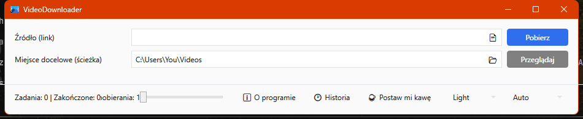
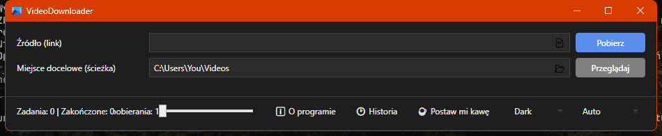

Darmowy program open source dla Windows, nakładka graficzna (GUI) na yt-dlp, który pobiera filmy z YouTube i ponad 1000 innych serwisów. Wklej jeden link albo całą listę, wybierz jakość, a program pobierze, połączy i zapamięta wszystkie pobrania.
Wymaga Windows i .NET 8 Desktop Runtime.
.txt, a program doda każdy z nich do kolejki.

Tak. VideoDownloader to darmowe oprogramowanie open source na licencji GPLv2. Bez reklam, bez zakładania konta i bez telemetrii.
Z każdej strony obsługiwanej przez yt-dlp, czyli z YouTube i ponad tysiąca innych serwisów wideo. Program przy każdym uruchomieniu sam aktualizuje yt-dlp (bez uprawnień administratora), więc obsługa nowych stron i zmian w serwisach pojawia się bez ponownej instalacji.
Filmy są zapisywane jako MP4. Wybrane ścieżki wideo i audio są łączone za pomocą dołączonego FFmpeg, więc plik odtworzysz w każdym popularnym odtwarzaczu.
Tak. Wklej lub przeciągnij listę linków albo wczytaj je z pliku .txt, a każdy link trafi do kolejki pobierania. Możesz ustawić, ile pobrań ma działać jednocześnie.
Windows 10 lub 11 (64-bit) oraz .NET 8 Desktop Runtime. Zainstaluj program instalatorem .msi albo użyj wersji przenośnej .zip i uruchom bezpośrednio VideoDownloader.Wpf.exe.
Tak. Interfejs jest dostępny po polsku i po angielsku. Przy pierwszym uruchomieniu program dopasowuje się do języka Windows, a język można w każdej chwili zmienić ręcznie.
Uruchom instalator .msi albo pobierz przenośną wersję .zip i po prostu uruchom VideoDownloader.Wpf.exe. Możesz też zainstalować go z wiersza poleceń: winget install APPIT.VideoDownloader. Bez konta, nic nie wysyła danych w tle.